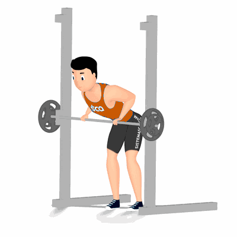

Remada Curvada na Barra Guiada

Exercício efetivo que abrange costas ou dorsais. Realiza um movimento composto, assim como, o agachamento ou levantamento terra, que estimula grandes músculos. Demanda consciência corporal e de músculos auxiliares da região lombar. Indicado a praticante de musculação nível avançado.
Ficha Técnica
Tipo: Musculação
Grupo Muscular: Costas
Aparelho: Nenhum
Músculos: Nenhum
Como realizar
- Posicione a barra do aparelho na altura das coxas;
- Segure a barra com as mãos, pegada em pronação;
- Na mesma distância da largura dos ombros, pés afastados e joelhos semiflexionados;
- Incline o tronco para frente e mova o quadril para trás;
- Destrave a barra e desça o peso até que os cotovelos estejam estendidos;
- Puxe a barra em direção à cintura, realizando a flexão dos cotovelos ao lado do corpo;
- Retorne à posição inicial e repita os movimentos.
 RC STORE
RC STORE